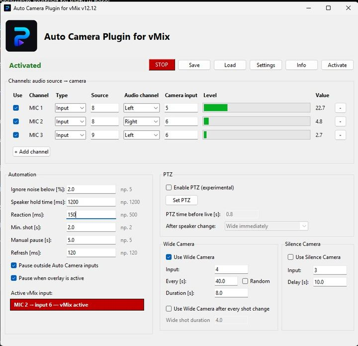

Automatyczne przełączanie
Ogranicz powtarzalne zmiany kamer i dopasuj obraz do aktywnego rozmówcy.
Automatyzacja kamer w vMix
Auto Camera przełącza kamery zależnie od osoby, która aktualnie mówi. Ogranicza ręczne przełączanie podczas podcastów, wywiadów, debat i wielokamerowych produkcji na żywo.

Jak to działa
Auto Camera wykorzystuje aktywność mikrofonów, aby zdecydować, która kamera powinna być na wizji. Dzięki temu miks wielokamerowy reaguje na rozmowę bez ciągłego ręcznego przełączania.
Użyj aplikacji z kamerami i mikrofonami przygotowanymi do danej produkcji.
Auto Camera monitoruje aktywność mikrofonów i rozpoznaje, kto aktualnie mówi.
Odpowiadająca rozmówcy kamera zostaje automatycznie pokazana na wizji.
Najważniejsze korzyści
Ogranicz powtarzalne zmiany kamer i dopasuj obraz do aktywnego rozmówcy.
Wykorzystuj wiele kamer i mikrofonów w produkcjach opartych na rozmowie.
Skup się na programie, gościach i dźwięku zamiast na każdym pojedynczym cięciu.
Wersja bezpłatna działa przez 10 minut od uruchomienia. Po zakończeniu tego czasu możesz uruchomić aplikację ponownie i kontynuować testy przed zakupem subskrypcji.
Pytania
Przełącza kamery zależnie od osoby, która aktualnie mówi, wykorzystując aktywność mikrofonów jako sygnał sterujący.
Dla realizatorów podcastów, wywiadów, debat i innych wielokamerowych produkcji w vMix.
Tak. Bezpłatna wersja działa przez 10 minut po uruchomieniu i może zostać uruchomiona ponownie.
Nie. Plugins For Live tworzy niezależne narzędzia do pracy z vMix.
Wypróbuj Auto Camera we własnym środowisku lub wykup subskrypcję, gdy będziesz gotowy korzystać bez limitu czasu wersji próbnej.